Версия 1.1 от сентября 2008
Контроллер движений Clickteam (КДК) |
Контроллер предназначен для работы с различными типами движений, каждое из которых имеет отдельное подменю для действий и выражений. Этим расширением контролируются следующие движения:
Действия движений сначала должны знать, каким объектом управлять, поэтому объект сначала следует выбрать, прежде чем применять какие-либо действия, специфичные для движений. Примечание: движение презентации не требует выбранного объекта, оно находит его на сцене автоматически. Выражения работают немного иначе: в качестве параметра требуется фиксированное значение объекта; его можно получить из меню выражений большинства объектов. Чтобы использовать последний установленный с помощью действий «Установить объект» объект, введите ноль в выражении фиксированного значения.
Расширение также предоставляет дополнительные выражения для расчёта расстояния
и угла между двумя объектами или точками, а также выражения для преобразования
между градусами в углах и направлениями Multimedia Fusion.
| 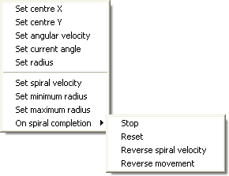 | 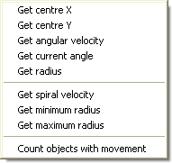 |
Снимок действий (слева) и выражений (справа), которые можно применить к объекту со включённым круговым движением.
| 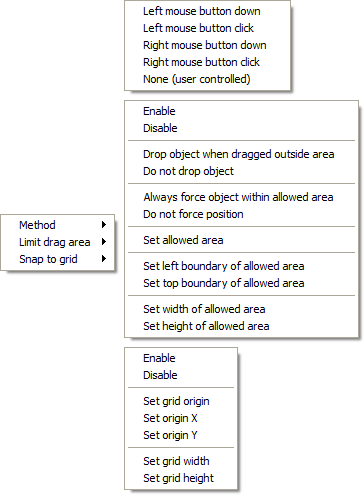 | 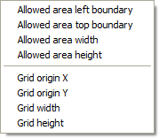 |
Снимок действий (слева) и выражений (справа), которые можно применить к объекту со включённым движением перетаскивания.
| 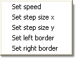 |
Снимок действий (слева) и выражений (справа), которые можно применить к объекту со включённым движением захватчиков.
Примечание: из-за ошибки, действие «Получить скорость» фактически возвращает скорость 101, и вам нужно передавать скорость 101 в действие «Установить скорость».
| 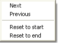 | 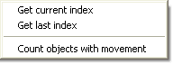 |
Снимок действий (слева) и выражений (справа), которые можно применить к объекту со включённым движением презентации.
| 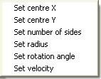 | 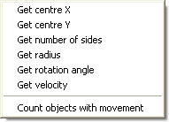 |
Снимок действий (слева) и выражений (справа), которые можно применить к объекту со включённым движением по правильному многоугольнику.
| 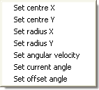 | 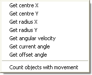 |
Снимок действий (слева) и выражений (справа), которые можно применить к объекту со включённым движением по простому эллипсу.
| 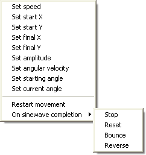 | 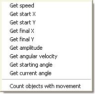 |
Снимок действий (слева) и выражений (справа), которые можно применить к объекту со включённым синусоидальным движением.
| 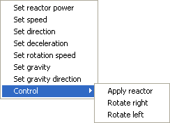 | 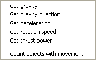 |
Снимок действий (слева) и выражений (справа), которые можно применить к объекту со включённым движением космического корабля.
| 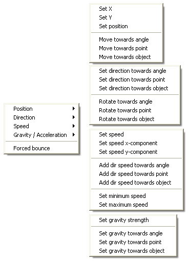 | 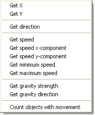 |
Снимок действий (слева) и выражений (справа), которые можно применить к объекту со включённым векторным движением.